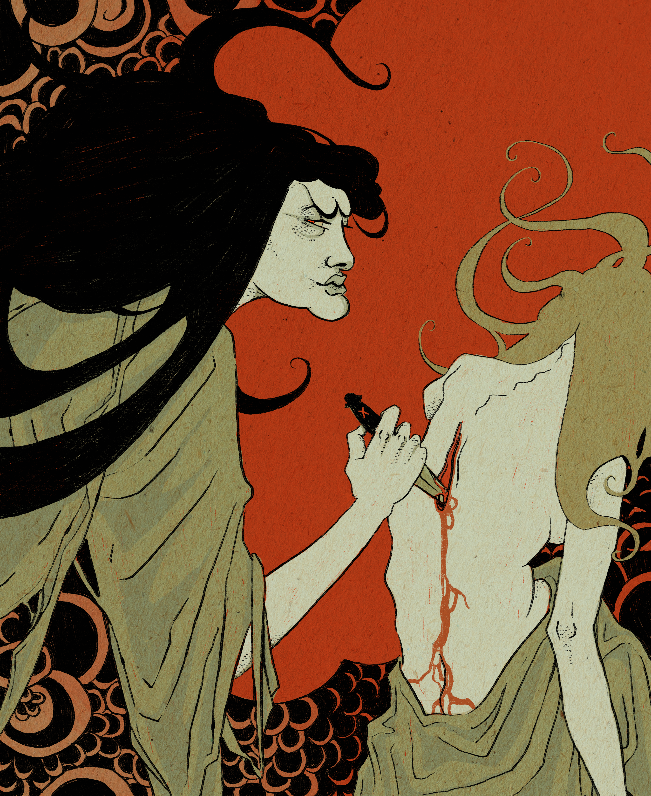
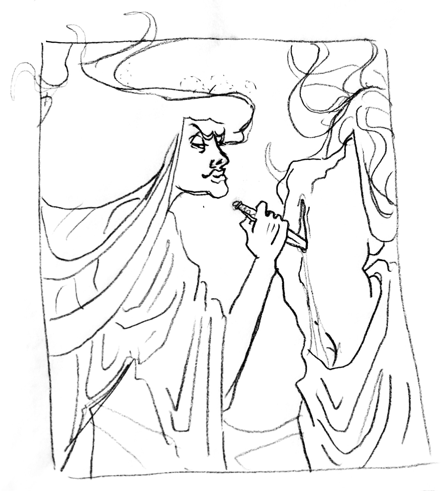
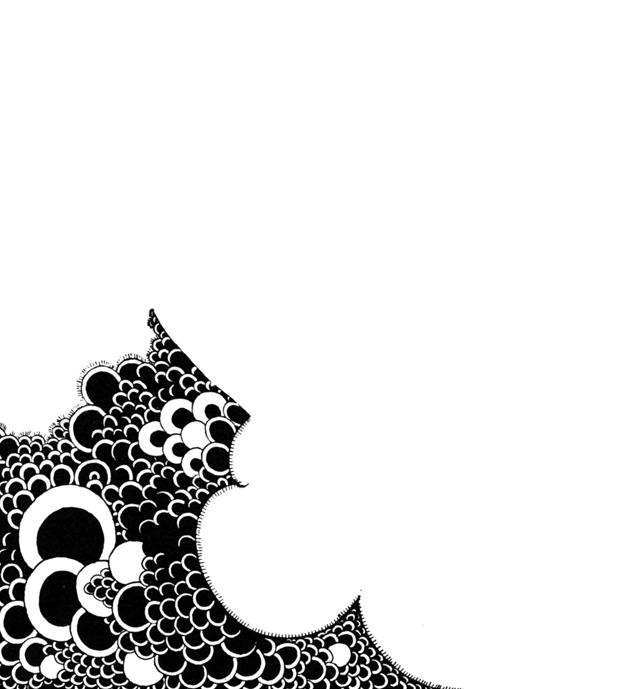
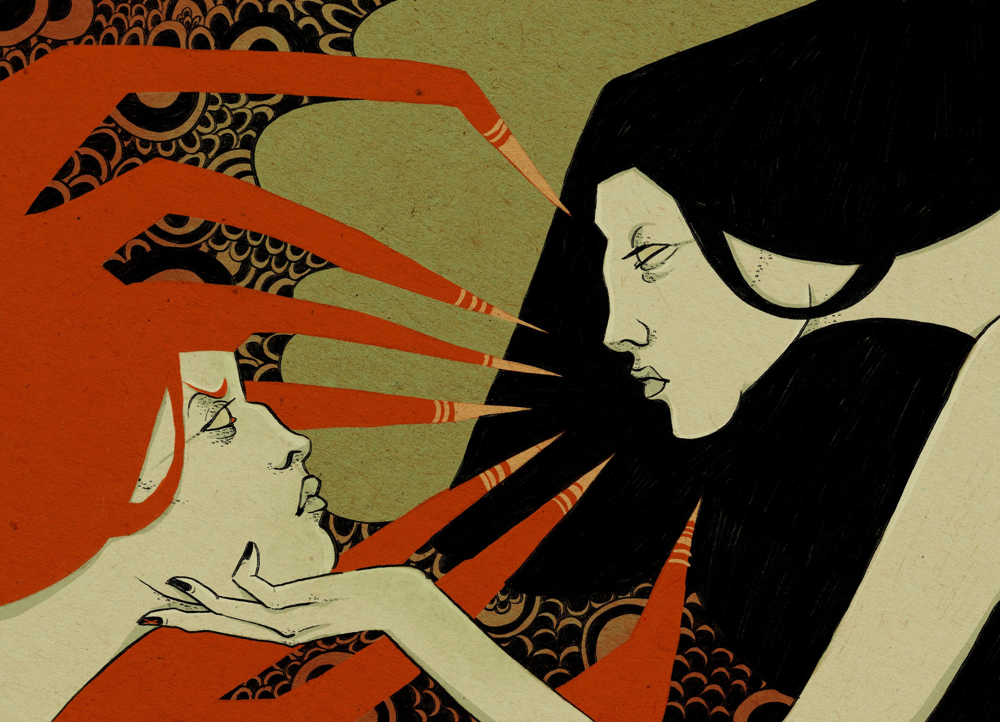
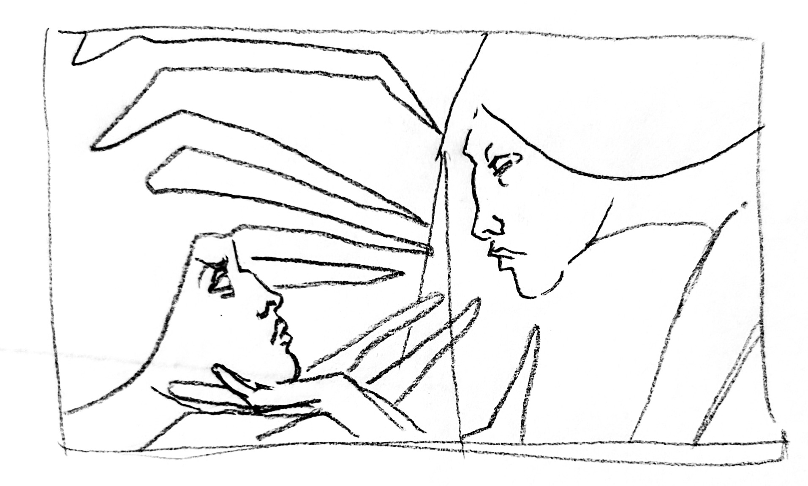
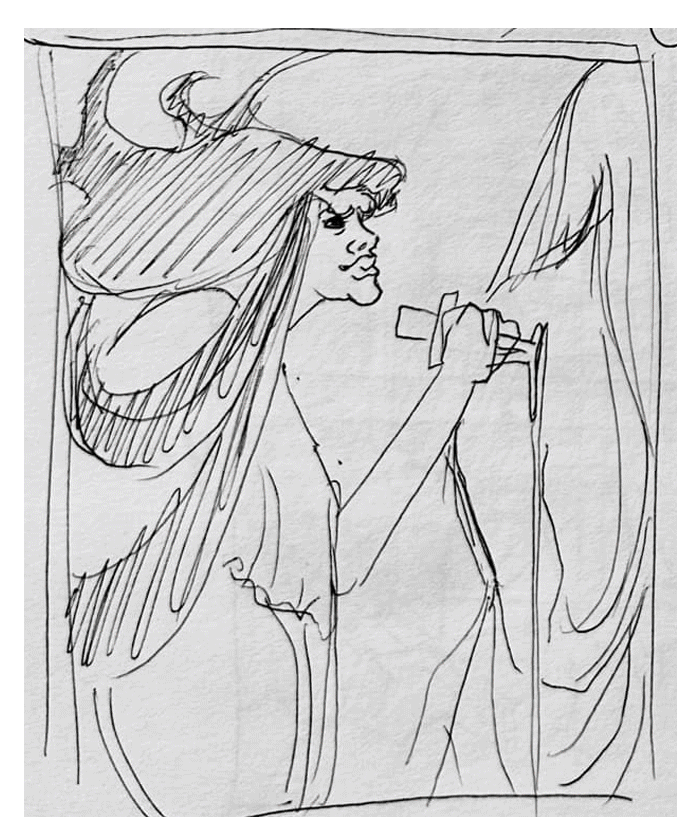

Miséricorde
.2025
Illustrations éditoriales basées sur l’article Rager sans être jugé de Maro Thibodeau, dans lequel la place de la colère dans nos sociétés est remise en question. Souvent critiquée, incomprise ou diminuée, la haine prend maintenant tout l’espace dont elle a besoin. L’ère de la colère est arrivée. Illustrations digitales.





